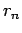
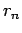
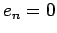

Next: Integral Up: Control Theory 101 Previous: Control Theory 101
All three components of the PID algorithm are driven by the difference
between the process value (i.e. the current speed) and the reference
point (i.e. the target speed.) We will call this difference (of
error) for one particular time step  . For that same time step,
we call the process value
. For that same time step,
we call the process value  and the reference point .
and the reference point .
The output value (i.e. the accelerator position) is called  .
.
The proportional component simple calculates  based on the
size of the error term
based on the
size of the error term  by simply multiplying it by a constant,
by simply multiplying it by a constant,
 .
.
For simple situations, this all by itself can be a very effect control
algorithm. Typically this works best when you know that when  then  . For example, imagine a simple wing leveler in an
aircraft. The process value is going to be bank angle, the reference
point is going to be zero (zero bank angle means the wings are level.)
Assume a well trimmed aircraft with neutral stability so that when the
ailerons are zero there is no change in bank. A proportional only
control would set the aileron deflection inversely proportional to the
bank angle. As the bank angle gets closer to zero, the aileron
deflection gets closer to zero. Something as simple as this (a
formula with one multiply operation) can be an amazingly effective and
stable controller.
. For example, imagine a simple wing leveler in an
aircraft. The process value is going to be bank angle, the reference
point is going to be zero (zero bank angle means the wings are level.)
Assume a well trimmed aircraft with neutral stability so that when the
ailerons are zero there is no change in bank. A proportional only
control would set the aileron deflection inversely proportional to the
bank angle. As the bank angle gets closer to zero, the aileron
deflection gets closer to zero. Something as simple as this (a
formula with one multiply operation) can be an amazingly effective and
stable controller.
Curtis L. Olson 2004-02-01